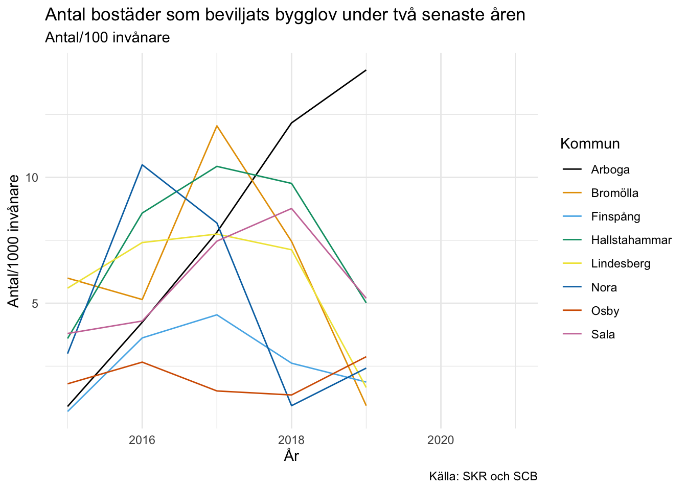

SCB har massa intressant data men mycket är på en nationell nivå. En annan datakälla, som är helt inriktad på kommunal och regional statistik, är Kolada, som är Sveriges kommuner och regioners (SKR) webbtjänst för regional statistik.
Likt SCB har Kolada ett gränssnitt på webben, och precis som SCB har de också ett öppet API. Love Hansson, som är analytiker på Pensionsmyndigheten, har byggt ett paket för att anropa Kolada från R. Det här innebär att om du jobbar mycket med kommunal eller regional statistik kan du med hjälp av R-skript automatisera all inhämtning och rapportering av regional statistik från Kolada.
rKolada
Paketet installeras enkelt med install.packages("rKolada").
För att få en övergripande bild över Koladas datamodell och paketet rKolada kan jag varmt rekommendera Love Hanssons vignette som finns här.
Hur Kolada fungerar
På Koladas hemsida kan du enkelt söka efter olika KPI-er. Där kan du också få en enkel tabell och visualisering av resultatet. rKolada ger oss möjlighet att programmatiskt ta ut dessa tabeller, vilket underlättar om vi behöver ta ut statistik fler gånger än en.
Med funktionen get_kpi() får vi en tabell med alla KPI-er som finns tillgängliga.
# A tibble: 5,522 × 13
auspices description has_ou_data id is_divided_by_g… municipality_ty…
<chr> <chr> <lgl> <chr> <int> <chr>
1 E Personalkostnad… NA N000… 0 K
2 E Personalkostnad… FALSE N000… 0 K
3 X Kommunalekonomi… FALSE N000… 0 K
4 <NA> Externa intäkte… FALSE N000… 0 K
5 <NA> Inkomstutjämnin… FALSE N000… 0 K
6 <NA> Kostnadsutjämni… FALSE N000… 0 K
7 X Regleringsbidra… FALSE N000… 0 K
8 <NA> Utjämningssyste… FALSE N000… 0 K
9 X Införandebidrag… FALSE N000… 0 K
10 X Strukturbidrag,… FALSE N000… 0 K
# … with 5,512 more rows, and 7 more variables: operating_area <chr>,
# ou_publication_date <chr>, perspective <chr>, prel_publication_date <chr>,
# publ_period <chr>, publication_date <chr>, title <chr>
Vi kan filtrera dessa med dplyr och stringr eller använda den inbyggda funktionen kpi_search():
kpi_bygglov <-kpi_search(kpis, c("bostäder som beviljats bygglov"), column ="description")kpi_bygglov
# A tibble: 1 × 13
auspices description has_ou_data id is_divided_by_g… municipality_ty…
<chr> <chr> <lgl> <chr> <int> <chr>
1 X Antal bostäder s… FALSE N079… 0 K
# … with 7 more variables: operating_area <chr>, ou_publication_date <chr>,
# perspective <chr>, prel_publication_date <chr>, publ_period <chr>,
# publication_date <chr>, title <chr>
För att få ner data för detta KPI behöver 1) ett ID och 2) specificera vilken eller vilka kommuner du vill ha data för.
ID får du enkelt ut genom kpi_extract_ids().
kpi_extract_ids(kpi_bygglov)
[1] "N07925"
De kommuner, eller regionala indelningar som finns, kan vi på motsvarande sätt få genom get_municipality().
get_municipality()
# A tibble: 312 × 3
id title type
<chr> <chr> <chr>
1 1440 Ale K
2 1489 Alingsås K
3 0764 Alvesta K
4 0604 Aneby K
5 1984 Arboga K
6 2506 Arjeplog K
7 2505 Arvidsjaur K
8 1784 Arvika K
9 1882 Askersund K
10 2084 Avesta K
# … with 302 more rows
En bra sak med Kolada är att de för alla Sveriges kommuner har referenskommuner, kommuner som på olika sätt liknar kommunen du är intresserad av. På så sätt kan vi enkelt ta fram kommuner som är relevanta att jämföra med. I rKolada gör vi det med get_municipality_groups() och den tillhörande search-funktionen.
# A tibble: 11 × 3
id members title
<chr> <list> <chr>
1 G175948 <df [7 × 2]> Liknande kommuner ekonomiskt bistånd, Finspång, 2020
2 G176238 <df [7 × 2]> Liknande kommuner socioekonomi, Finspång, 2020
3 G176528 <df [7 × 2]> Liknande kommuner äldreomsorg, Finspång, 2021
4 G35908 <df [7 × 2]> Liknande kommuner grundskola, Finspång, 2021
5 G36200 <df [7 × 2]> Liknande kommuner gymnasieskola, Finspång, 2021
6 G36492 <df [7 × 2]> Liknande kommuner IFO, Finspång, 2021
7 G37368 <df [7 × 2]> Liknande kommuner, övergripande, Finspång, 2021
8 G39541 <df [7 × 2]> Liknande kommuner LSS, Finspång, 2021
9 G85502 <df [7 × 2]> Liknande kommuner fritidshem, Finspång, 2021
10 G85794 <df [7 × 2]> Liknande kommuner förskola, Finspång, 2021
11 G87668 <df [7 × 2]> Liknande kommuner integration, Finspång, 2021
I slutändan har vi nu all metadata vi behöver och vill då få in den faktiska datan. För att få tag i den använder vi bara get_values(), då får vi tillbaka en data.frame med all data som vi frågat efter.
# A tibble: 56 × 8
kpi municipality_id year count gender value municipality municipality_ty…
<chr> <chr> <int> <int> <chr> <dbl> <chr> <chr>
1 N07925 0562 2015 1 T 0.7 Finspång K
2 N07925 1272 2015 1 T 6 Bromölla K
3 N07925 1273 2015 1 T 1.8 Osby K
4 N07925 1884 2015 1 T 3 Nora K
5 N07925 1885 2015 1 T 5.6 Lindesberg K
6 N07925 1961 2015 1 T 3.6 Hallstahamm… K
7 N07925 1981 2015 1 T 3.8 Sala K
8 N07925 1984 2015 1 T 0.9 Arboga K
9 N07925 0562 2016 1 T 3.62 Finspång K
10 N07925 1272 2016 1 T 5.15 Bromölla K
# … with 46 more rows
Vi har nu data som antingen kan visualiseras, inkluderas i en Rmarkdown-genererad PDF-rapport, skrivas till en Excel, PowerPoint, lagra i en databas med mera.
Här nöjer vi oss med en enkel visualisering:
ggplot(grp_data, aes(x = year, y = value, color = municipality)) +geom_line() +labs(title ="Antal bostäder som beviljats bygglov under två senaste åren",subtitle ="Antal/100 invånare",caption ="Källa: SKR och SCB",y ="Antal/1000 invånare",x ="År",color ="Kommun" ) +theme_minimal() + ggthemes::scale_color_colorblind()

Ett stort tack till Love Hansson som lagt tid på att designa ett paket som jag tror kan underlätta för många analytiker på myndigheter, universitet och ute bland Sveriges kommuner och landsting.